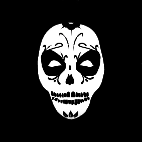

|  |
Muerte Entertainment |
Storytelling
Leo started writing his first words with the purpose of storytelling when studying Arts and Communication in 1997 at the Mackenzie University in São Paulo, the city where he was born. Since then, he developed the love for storytelling. His passion, united with the enthusiasm for stories like the ones written by George A. Romero and Max Brooks, helped him to bring to life some of his best work.
| Work | Date |
|---|---|
| Written | 2017 |
A child of the Irish Boston Mob leaves his life of crimes behind, after his father is brutally murdered by his best friend and co-boss. He leaves Boston to join the police academy in New York — turning his life around —, to come back undercover and work on an incredible plot, to avenge his father and take over the mob. Becoming “The Boss”.
| Work | Date |
|---|---|
| Written | 2017 |
| Published | 2018 |
Follow the chef, Johnny Hendrix and a group of his beloved friends as they try to flee from Stockholm after an apocalyptic event. In search for safety, a place where they can survive, rebuild and perhaps restart humanity.
| Work | Date |
|---|---|
| Written | 2019 |
Running against time to find his lost family in a torn post WWIII world, a soldier engages in a frantic race while ill hearted scientists find a way to give mankind a new beginning. In a futuristic and modern world yet devastated by war, a soldier wakes up from a long state of unconsciousness. After being wounded in battle he finds himself in a hospital located in Keflavik, Iceland — at a military base. The European Army soldier Robert Lundqvist wakes up only to find everything deserted. All he has, is a picture of his family — left behind by his wife and daughter, before they were forced to abandon him — and the urge to find them.
| Work | Date |
|---|---|
| Written | 2020 |
The incredible stories of five different characters as they try to survive an apocalyptic event. The event that turns the world into treacherous territory, leaving a few survivors to dwell among Feeders and all the adversities of an apocalyptic scenario. Experience a Stockholm left in crumbles after the great majority of humankind transforms into a terrifying version of it, caused by an ancient virus released from the permafrost's meltdown due to climate change and the product of our ways of life. Follow the characters' endeavors as they adapt to their new reality and transform themselves to overcome the hardships that are thrown at them in the blink of an eye and the fate that waits for them as they do all they can to avoid it.
Pirate Island is an awarded adventure game that will engage you in a unique voice-first experience. You'll have to learn how to navigate, and sword fighting and your brain will be your best ally to challenge cunning pirates on dice and make tough choices to explore and thrive in this ruthless world. You've never played a voice game before? Don't worry; there are several infamous characters to guide you through this adventure. If you are feeling the greed running on your veins step on board and become the pirate, you were destined to be! Are you brave enough to play?
| Writing | ⭐️⭐️⭐️⭐️⭐️ |
| Creativity | ⭐️⭐️⭐️⭐️⭐️ |
| Accuracy | ⭐️⭐️⭐️⭐️⭐️ |